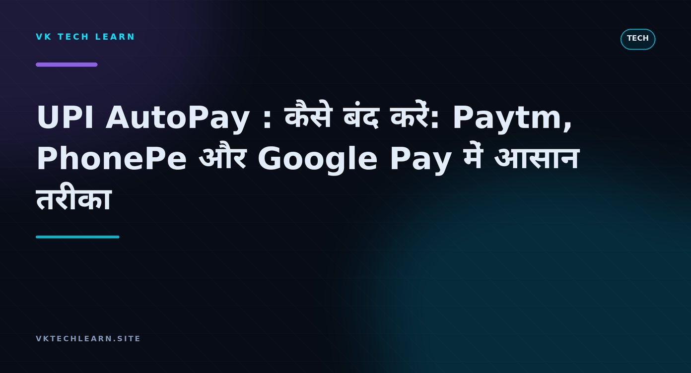

UPI AutoPay : कैसे बंद करें: Paytm, PhonePe और Google Pay में आसान तरीका
UPI AutoPay : कैसे बंद करें – Paytm, PhonePe और Google Pay में आसान तरीका
UPI AutoPay फीचर ने ऑनलाइन पेमेंट्स को बेहद आसान बना दिया है। इससे यूजर्स को हर बार पेमेंट करने की झंझट नहीं रहती, और सब्सक्रिप्शन या बिल अपने आप समय पर कट जाते हैं। लेकिन कई बार हमें AutoPay बंद या पॉज करना पड़ता है, ताकि पेमेंट पर बेहतर कंट्रोल रखा जा सके।

यहां हम बताएंगे कि Paytm, PhonePe और Google Pay में AutoPay फीचर को कैसे बंद या रोक सकते हैं।
Paytm में AutoPay बंद करने का तरीका
- Paytm ऐप खोलें और Passbook या Wallet सेक्शन में जाएं।
- AutoPay Subscriptions पर क्लिक करें।
- जिस सब्सक्रिप्शन या बिल का AutoPay बंद करना है, उसे चुनें।
- Cancel AutoPay या Pause ऑप्शन पर टैप करें।
इतना करते ही संबंधित सेवा का ऑटो पेमेंट बंद हो जाएगा। Paytm आपको एक नोटिफिकेशन भेजकर कन्फर्म भी करता है।
PhonePe में AutoPay बंद करने का तरीका
- PhonePe ऐप खोलें और My Money → AutoPay सेक्शन में जाएं।
- यहां आपको सभी एक्टिव ऑटो पेमेंट्स की लिस्ट दिखाई देगी।
- जिस पेमेंट को रोकना है, उसे चुनें।
- Cancel या Stop AutoPay पर टैप करें।
PhonePe पर AutoPay बंद करते समय सुनिश्चित करें कि पेमेंट ड्यू डेट के करीब न हो, ताकि किसी बिल का प्रोसेस अधूरा न रह जाए।
Google Pay में AutoPay बंद करने का तरीका
- Google Pay ऐप खोलें और Bills & Subscriptions सेक्शन में जाएं।
- उस ऑटो पेमेंट या सर्विस को चुनें जिसे आप रोकना चाहते हैं।
- Manage विकल्प पर टैप करें।
- अब Cancel AutoPay या Pause Payments का विकल्प चुनें।
Google Pay में AutoPay कैंसिल करने के बाद भी आपके पुराने ट्रांजैक्शन हिस्ट्री सुरक्षित रहती है, ताकि आप भविष्य में उसका ट्रैक रख सकें।
महत्वपूर्ण सलाह
AutoPay बंद करने या Pause करने के बाद यह सुनिश्चित करें कि संबंधित सब्सक्रिप्शन या बिल मैन्युअली अपडेट किया गया हो, ताकि सर्विस रुक न जाए या लेट पेमेंट चार्ज न लगे।
निष्कर्ष
चाहे आप Paytm, PhonePe या Google Pay इस्तेमाल करते हों — UPI AutoPay को बंद या Pause करना एक मिनट से भी कम समय में किया जा सकता है। अगर आप किसी ऐप का AutoPay अस्थायी रूप से रोकना चाहते हैं, तो “Pause” ऑप्शन सबसे बेहतर रहेगा। इस तरह आप अपनी पेमेंट्स पर पूरा नियंत्रण रखते हुए सुरक्षित लेनदेन जारी रख सकते हैं।
#UPIAutoPay #Paytm #PhonePe #GooglePay #DigitalPayments #UPITips #TechNews #OnlinePayments #DigitalIndia #FintechIndia